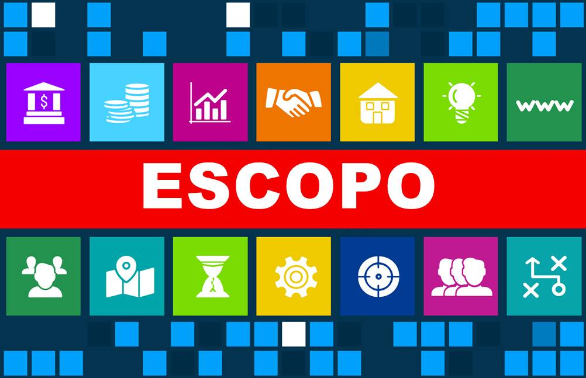
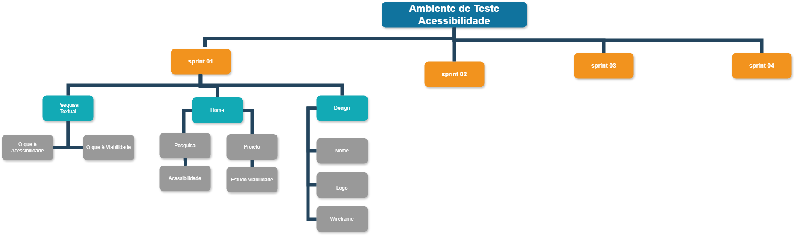
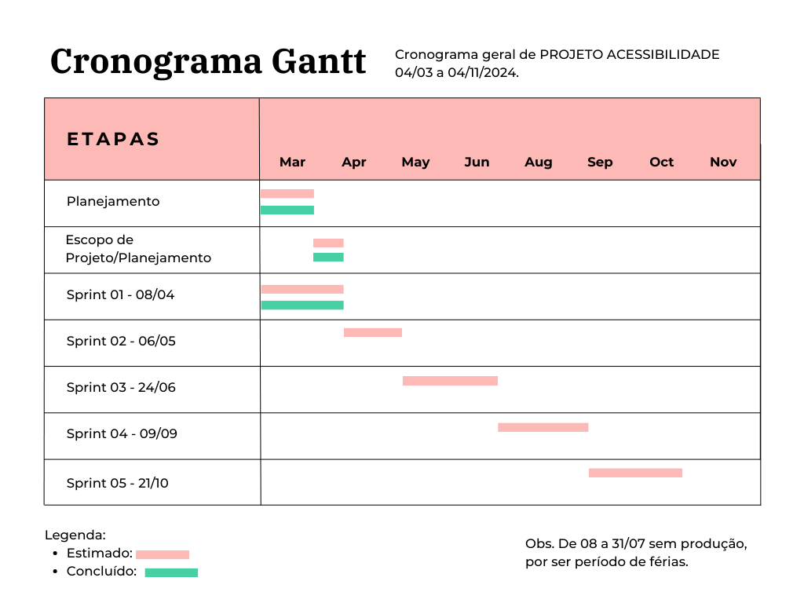

Escopo

O Escopo do Projeto é todo o trabalho necessário para obter um produto, serviço ou resultado. Ele reúne informações relevantes sobre o projeto, como: objetivos específicos, entregas, tarefas, responsabilidades, prazos e custos. Além disso, estabelece os limites do projeto e os critérios de validação e aceitação das entregas.
Escrevendo o escopo
- O que é?
Trata-se de um website para ser utilizado como um ambiente
de teste para configuração de itens de acessibilidade digital;
- Justificativa: Para estudos dos conceitos de desenvolvimento de projeto com recursos de acessibilidade;
- Objetivo: Projetando um website informativo que apresente textos sobre acessibilidade, explicação de como o site foi criado e que ainda demonstre a aplicação de recursos de acessibilidade com integração de bibliotecas externas/serviços externos.
O que é o ciclo de vida de um software?
O ciclo de vida de um software é uma estrutura que indica processos e atividades envolvidas no desenvolvimento, operação e manutenção de um software, abrangendo de fato toda a vida do sistema. Neste ciclo, existem modelos que definem como o software será desenvolvido, lançado, aprimorado e finalizado.
Ciclo de vida desse projeto: Incremental
O que é EAP – Estrutura Analítica do Projeto?
A Estrutura Analítica do Projeto ou EAP (tradução do inglês Work Breakdown Structure – WBS) é um diagrama utilizado para a organização e gestão de projetos. Ele é formatado em diagrama a fim de permitir a visualização geral da demanda, facilitando o gerenciamento das atividades.

O que é cronograma de projeto?
Cronograma de projeto é uma ferramenta de gestão que tem por objetivo organizar atividades, recursos e prazos em único lugar. Então, de forma resumida, o cronograma de projeto proporciona uma visão geral sobre os prazos do projeto, mostra como e quando as entregas serão disponibilizadas e quem é responsável por cada parte dessas entregas.

Como montar um cronograma de projeto?
1. Planeje o gerenciamento do cronograma;
2. Defina as atividades;
3. Sequencie as atividades;
4. Estime as durações das atividades;
5. Desenvolva o cronograma;
6. Controle o cronograma.
O que é matriz de reponsabilidade?
A matriz de responsabilidade é uma ferramenta visual que define a participação e a responsabilidade de cada profissional dentro de um projeto. Essa solução pode ser usada, por exemplo, no desenvolvimento de estratégias, na criação e/ou lançamento de novos produtos, nas otimizações de processos internos, entre diversas outras situações.
Referências
https://www.euax.com.br/2018/12/definicao-de-escopo-de-projeto/
https://www.treinaweb.com.br/blog/ciclo-de-vida-software-por-que-e-importante-saber
https://www.pontotel.com.br/estrutura-analitica-do-projeto/
https://www.euax.com.br/2019/02/cronograma-de-projeto/
https://www.zendesk.com.br/blog/matriz-de-responsabilidade/